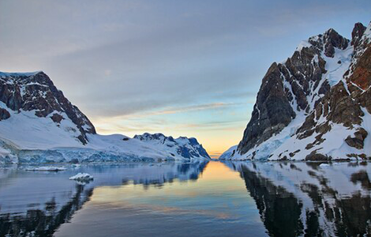
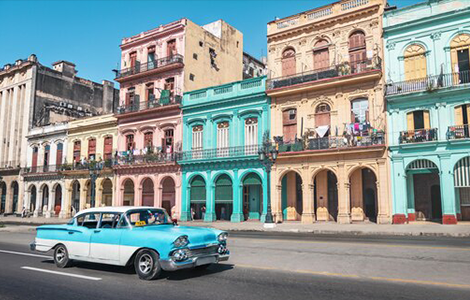

NATIONAL GEOGRAPHIC
Where to travel in December
TRAVEL
- 
- 
As nights linger and the cold closes in on the Northern Hemisphere, the itchy footed can either escape south to sun-lathered landscapes or wrap up warm for winter fun. Frosty Christmas festivities spread their cheer across Europe in December, from German-style markets pouring steamy mugs of mulled wine to carol singers on cathedral steps.
The month is also ideal for polar play with the midnight sun illuminating days for wildlife spotting in Antarctica, while the Northern Lights dance across clear skies around the Arctic Circle and fresh powder heralds the opening of the slopes in ski resorts across North America and Europe.
December goes out with a bang as countries across the globe celebrate New Year’s Eve. Choose from a sky of fireworks in Sydney, beach fun in Rio de Janeiro, the multiday Hogmanay festivities across Scotland, the ball drop in Times Square, New York, or Miami for bottle-popping parties.
1. Edinburgh, Scotland
The Scottish capital is riotously cheerful in the run-up to Christmas and New Year’s Eve. Days may be darker, but Edinburgh is alight with a sprinkling of fairy lights and a series of eye-widening displays throughout its honeyed streets. Crowning an extinct volcano in the city centre, Edinburgh Castle rings in the season with Castle of Light, an after-dark trail of stunning projections on its stone walls. Meanwhile, at the Royal Botanic Garden, you’ll find illuminated canopies, a laser garden, a one mile path shimmering with more than a million ethereal lights and plenty more themed spectacles. The German-style Christmas Market in East Princes Street Gardens is lined with stalls selling mulled Irn Bru and festive kitsch, plus free wheeling rides in Santa Land. Come for Christmas, but stay for New Year’s Eve. Hogmanay’s three days of revelry include a torchlight procession, street parties with performances, a firework display over the castle and a frigid dip in the Firth of Forth.
2. Cuba
Cuba’s patchwork pastel hues and palm-fringed streets are the stuff of dreams in dark December. The month marks the beginning of the dry season, meaning reliably warm days and scant rain, ideal for sun-soaked south coast beaches; hiking the hills across western Viñales and Pinares de Mayarí; watching seasonal birds in spots like Parque Nacional Ciénga de Zapata as they head to Cuba’s wetlands and forests; and sightseeing in musical Havana or Trinidad, where the Spanish colonial architecture is pristinely preserved.
Cuba also celebrates with a slew of festivals in December. The Havana Film Festival showcases pictures from Spanish-language filmmakers, while the art-laden Havana Biennial often runs this month. Things get a little wilder at Las Parrandas firework competition in Remedios (and smaller villages across Villa Clara), which also features parade float processions and street parties with rumba percussion ensembles. Snag a ticket to the New Year’s Eve al fresco cabaret show and dinner at Cathedral Plaza in atmospheric Old Havana for a classy celebration.
3. Finnish Lapland
Finland’s frosty weather facilitates multiple seasonal activities. Stay cool in an ice hotel, such as the forest-ringed Arctic SnowHotel, which is rebuilt by hand every winter. Adrenaline levels can be raised by snowmobiling, snowshoeing, cross country skiing, Arctic swimming or skating on frozen lakes. And when you start to shiver, slip into a steamy sauna, as is Finnish tradition. December is also a prime month for the Northern Lights, which dance across clear Arctic Circle skies, where the frequency and intensity of the Aurora Borealis is at its peak.
More twinkling lights can be seen at Santa Claus Village in Rovaniemi, where the man in red apparently lives. Head here with tiny tots in the run up to Christmas for a magical meeting with Father Christmas in his hometown. Visitors can also send a card with an Arctic Circle stamp from Santa’s post office and head to artisan workshops for handcrafted knives and souvenirs made from northern materials, including birch, reindeer leather and juniper.
4. Antarctica
This world of white comprises mountains, valleys and plains blanketed beneath a thick sheet of ice. At its fragile edges are thousands of glaciers extending towards an iceberg-peppered sea. For most of the year, this frozen continent is inaccessible to travellers, but sea ice has retreated enough by December to welcome back expedition ships, which traverse these waters until March. Travel earlier in the month for peak benefits with shoulder season prices.
In December, temperatures increase to 0C and the sun never sets Antarctica is the only southern spot that witnesses this phenomenon. These longer, warmer days result in more wildlife encounters. The rookeries clustered along the coast are bursting with the first hatching penguin chicks, while hungry humpbacks are returning home from tropical waters. Seals of the Weddell, crabeater and leopard variety steal away for downtime on ice floes, while pups parade the beaches of South Georgia island. The breeding season for seabirds, such as albatross, cormorants and petrels, is also in full swing as chicks emerge and learn how to live in this remote wilderness.
Comments :
- john Very good
- john Very good
Leave a Reply
Your email address will not be published. Required fields are marked*
Related posts:
-
 Got a cold Here’s how your immune system is fighting it.
Got a cold Here’s how your immune system is fighting it.All day every day, a host of potential invaders attacks the body, particularly during the indoor season in cold climates. These microorganisms, called pathogens, come in the form of viruses, bacteria, parasites, and fungi, and the body’s immune
View article -
 2024 may bring the best auroras in 20 years
2024 may bring the best auroras in 20 yearsA particularly intense solar storm eruptions that propel electrically charged particles at high speeds away from the sun caused aurora borealis to be seen at latitudes much farther south than usual, with sightings in Virginia
View article -
 Walking is the sixth vital sign. Here’s how to do it right.
Walking is the sixth vital sign. Here’s how to do it right.Walking might seem simple. But it’s not, explains epidemiologist Peggy Cawthon, science director of the California Pacific Medical Center Research Institute. It’s an amazingly complex behavior that continues
View article